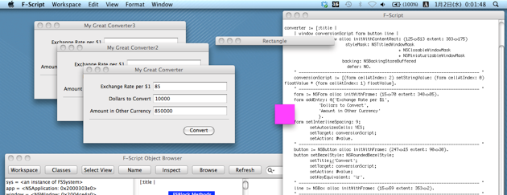

F-Script

F-Script ja
for Mac OS X

このサイトは、Mac OS X のフレームワーク Cocoa の能力を１００％引き出すことが可能なオブジェクト指向スクリプト言語「F-Script」の日本語による紹介と普及を目的としています。
F-Script は 最初期バージョン（1.1 BETA）のリリースが２００１年６月であり、１０年以上に渡って Mac OS X と共に進化を続けているオープンソースのソフトウェアですが、これまで日本語の情報が非常に少なく、日本では広く知られているとは言えない状況が続いてきました。
本サイトでは、原著者が公開している F-Script 関連ドキュメントを日本語に翻訳して公開すること、及び、その解説に沿ったサンプルコード等を紹介することを通じて、こうした状況の改善に
このサイトについて｜What this site is ...